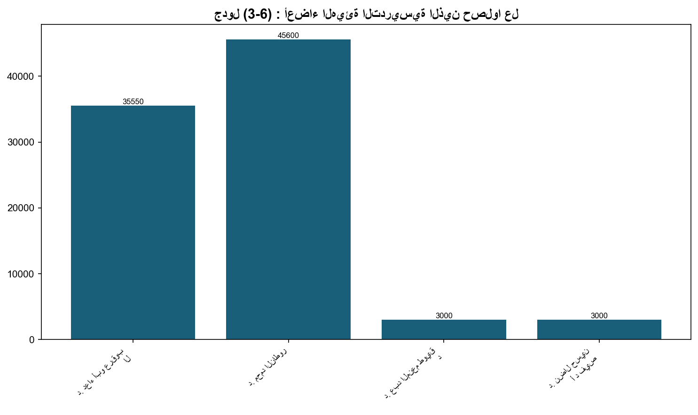
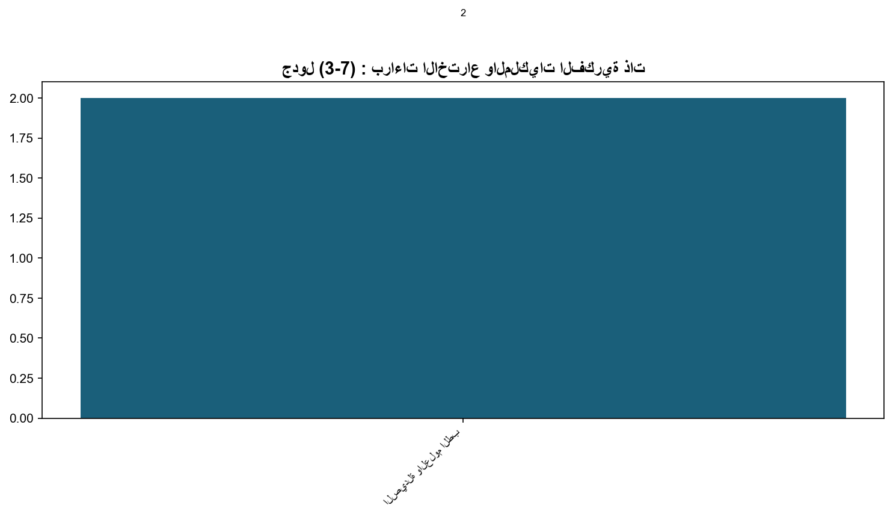

3.3: عدد الجوائز العلمية وبراءات الاختراع المسجلة
📝 2 فقرة
📋 4 جدول
📊 2/0 شكل
هذا بالإضافة إلى حصول بعض أعضاء الهيئة التدريسية على جوائز مرموقة كما يوضح الجدول أدناه.
وتُعَدّ جامعة البترا الجامعة الخاصة الوحيدة التي قامت بنشر عشر براءات اختراع، وحاليًا في طور تحويل براءات الاختراعات إلى منتجات من خلال تعريف رواد الأعمال والمستثمرين بأهمية البراءات وتسويقها محليًا وعالميًا، إذ قامت العمادة بعقد مؤتمرات للإبداع ودعوة الصناعيين والمستثمرين إلى تسويق ابتكارات الجامعة.


جدول (3-4) : الباحثون المتميزون من مختلف الأقسام الأكاديمية في جامعة البترا للعام 2023/2024.
📊 20 صف من البيانات
| الرقم | إسم الباحث | الكلية | القسم |
|---|---|---|---|
| 1 | أ.د. رزان إبراهيم | الآداب والعلوم | اللغة العربية |
| 2 | د. إبراهيم فتحي حواري | الآداب والعلوم | اللغة الإنجليزية وآدابها |
| 3 | د. مؤيد ديب اسعيفان | الآداب والعلوم | الكيمياء |
| 4 | د. نور الياسين | الآداب والعلوم | العلوم الأساسية الإنسانية |
| 5 | أ.د. ناصر دكيدك | الصيدلة والعلوم الطبية | الصيدلانيات والتقانة الصيدلانية |
| 6 | أ.د. نضال القنة | الصيدلة والعلوم الطبية | العلوم الصيدلانية والطبية الحيوية |
| 7 | د. لؤي أبو قطوسة | الصيدلة والعلوم الطبية | التحاليل الطبية |
| 8 | د. آية زيد الكيلاني | الصيدلة والعلوم الطبية | التغذية السريرية والحميات |
| 9 | د. أنس خليل | الصيدلة والعلوم الطبية | الصيدلة السريرية والممارسة الصيدلانية |
| 10 | د. تماضر شطناوي | العلوم الإدارية والمالية | التسويق الرقمي |
| 11 | د. محمد الخالدي | العلوم الإدارية والمالية | ذكاء الأعمال وتحليل البيانات |
| 12 | د. محمد علقم | العلوم الإدارية والمالية | المحاسبة |
| 13 | د. واصف مطر | العلوم الإدارية والمالية | الأعمال والتجارة والالكترونية |
| 14 | د. سوزان عيسى | العلوم الإدارية والمالية | العلوم المالية والمصرفية |
| 15 | د. عبد الكريم الزعبي | العلوم الإدارية والمالية | إدارة الاعمال |
| 16 | د. ميادة الحيالي | العمارة والتصميم | التصميم الداخلي |
| 17 | د. رشا اليعقوب | الإعلام | الصحافة والاعلام الرقمي |
| 18 | د. جمال زراقو | تكنولوجيا المعلومات | علم الحاسوب والواقع الافتراضي |
| 19 | د. حسام الفاخوري | تكنولوجيا المعلومات | علم البيانات والذكاء الاصطناعي |
| 20 | د. سلام العماري | تكنولوجيا المعلومات | أمن المعلومات |
جدول (3-5) : الباحثون الحاصلون على جوائز للعام الجامعي 2023/2024.
📊 7 صف من البيانات
| إسم الباحث | الكلية | القسم الاكاديمي | إسم الجائزة | الجهة المانحة | مختصر البحث/ الجائزة |
|---|---|---|---|---|---|
| د. ضرار حسن عبد القادر بلعاوي | الصيدلة والعلوم الطبية | الصيدلة | جائزة التميز العلمي | وزارة الشباب والثقافة والتواصل المغربية بالتعاون مع الايسيسكو، الرباط – المغرب | نشر أبحاث في قطاع الصحة العامة والعلاج الدوائي التي كان لها أثر في وضع المعايير |
| د. دعاء أبو عرقوب | الصيدلة والعلوم الطبية | الصيدلة | قادة العالم في الابتكار | الأكاديمية الملكية البريطانية للهندسة | تطبيقات الخلايا واستخداماتها في العلاج. |
| أ.د. محمود السلمان | الآداب والعلوم | اللغة الإنجليزية-الترجمة | جائزة عن روايته في ثنايا الحي | مجمع اللغة العربية الأردني | تستكشف الرواية تجربة اجتماعية وإنسانية شاملة، تتناول هموم الإنسان وأبعاده المختل |
| د. مؤيد اسعيفان | الآداب والعلوم | كيمياء | تطوير بلاط خفيف الوزن صديق للبيئة | الأكاديمية الملكية للعلوم الهندسية | تطوير بلاط السقف خفيف الوزن والصديق للبيئة (بلاط بيترا-نايت). |
| د. عامر الجوخدار د. هدير ميرزا د. لما أبوحسان م. ياسمين السعودي | العمارة والتصميم | هندسة العمارة | أفضل 100 جامعة في تصنيف INSPIRELI العالمي للهندسة المعمارية للعام 2023-2024 | منظمة INSPIRELI العالمية، براغ - جمهورية التشيك | تم التقدم بمشاريع تخرج طلبة قسم هندسة العمارة للعام 2023-2024، وحصلت على المرتبة |
| أ.د. مياس الريماوي | الصيدلة والعلوم الطبية | الصيدلة | الباحثون ضمن أفضل 2% عالميًا في تقرير ستانفورد 2024 | ستانفورد | قائمة سنوية تعتمد على قاعدة بيانات Scopus لتحديد العلماء الأكثر استشهادًا في مجا |
| أ.د. عنبر شلاش | العلوم الإدارية والمالية | إدارة الأعمال | الباحثون ضمن أفضل 2% عالميًا في تقرير ستانفورد 2024 | ستانفورد | قائمة سنوية تعتمد على قاعدة بيانات Scopus لتحديد العلماء الأكثر استشهادًا في مجا |
جدول (3-6) : أعضاء الهيئة التدريسية الذين حصلوا على جوائز ومنح بحثية محلية وعالمية.
📊 4 صف من البيانات
| قيمة الجائزة | العام | رقم المشروع | اسم المشروع | الجهة المانحة | اسم المنحة | اسم الباحث |
|---|---|---|---|---|---|---|
| 35550 | 2023 و 2024 | MPH/1/59/2022 | Evaluation of the capability of mesenchymal stem cells treated with nanoparticl | صندوق دعم البحث العلمي وزارة التعليم العالي محلية | تمويل بحث علمي | د. دعاء أبو عرقوب الصيدلة |
| 45600 | 2023 و 2024 | MPH/1/61/2022 | Utilizing pemetrexed as a tumor targeting moiety using coupled nanotechnology an | صندوق دعم البحث العلمي وزارة التعليم العالي محلية | تمويل بحث علمي | د. محمد الناطور |
| 3000 | 2024 | Elucidation the interaction mechanism of decorated graphene oxide on the surface | UniMap – Malaysia | تمويل بحث علمي | د. عبد المنعم طويق د. مؤيد سعيفان | |
| 3000 | 2024 | Deep Eutectic Solvents Embedded Sponge for Potential Oil-Water Separation | UniMap – Malaysia | تمويل بحث علمي | د. نضال حسين أ د فيصل ابوالرب |
جدول (3-7) : براءات الاختراع والملكيات الفكرية ذات المنفعة الصناعية الممنوحة باسم الجامعة في العام 2
📊 10 صف من البيانات
| الرقم | الرقم | عنوان براءة الاختراع/ الملكية الفكرية | إسم الباحث | الكلية | رقم نشر الاختراع/ الملكية | تاريخ منح الاختراع/ الملكية |
|---|---|---|---|---|---|---|
| 1 | 1 | مركّبات الكوینولونات المستبدلة، واستخدامها في علاج السرطان، وطريقة لتحضيرها | د. أحمد الشيخ، أ.د. توفيق عرفات، د. لؤي أبو قطوسة، أ.د. إياد الملاح | الصيدلة والعلوم الطبية | WO/2020/136693 | 15/10/2023 (براءة اختراع ممنوحة لمدة 20 عام) |
| الاستخدامات: مركبات من عائلة الكوینولونات تستخدم في علاج سرطان الكبد والكلى. | الاستخدامات: مركبات من عائلة الكوینولونات تستخدم في علاج سرطان الكبد والكلى. | الاستخدامات: مركبات من عائلة الكوینولونات تستخدم في علاج سرطان الكبد والكلى. | الاستخدامات: مركبات من عائلة الكوینولونات تستخدم في علاج سرطان الكبد والكلى. | الاستخدامات: مركبات من عائلة الكوینولونات تستخدم في علاج سرطان الكبد والكلى. | الاستخدامات: مركبات من عائلة الكوینولونات تستخدم في علاج سرطان الكبد والكلى. | الاستخدامات: مركبات من عائلة الكوینولونات تستخدم في علاج سرطان الكبد والكلى. |
| 2 | 2 | تركيبة شوكلاتة مدعمة بمضادات للأكسدة محسنة، وطريقة لإعدادها | أ.د. مياس الريماوي أ.د. مروان المولا | الصيدلة والعلوم الطبية | WO2023166540 (A1) | 7/9/2023 |
| الاستخدامات: شوكلاتة ذات غذاء وظيفي مدعمة بمضادات للأكسدة. | الاستخدامات: شوكلاتة ذات غذاء وظيفي مدعمة بمضادات للأكسدة. | الاستخدامات: شوكلاتة ذات غذاء وظيفي مدعمة بمضادات للأكسدة. | الاستخدامات: شوكلاتة ذات غذاء وظيفي مدعمة بمضادات للأكسدة. | الاستخدامات: شوكلاتة ذات غذاء وظيفي مدعمة بمضادات للأكسدة. | الاستخدامات: شوكلاتة ذات غذاء وظيفي مدعمة بمضادات للأكسدة. | الاستخدامات: شوكلاتة ذات غذاء وظيفي مدعمة بمضادات للأكسدة. |
| نظام لتحسين الري في الحقول الزراعية باستخدام تحليلات البيانات الضخمة | نظام لتحسين الري في الحقول الزراعية باستخدام تحليلات البيانات الضخمة | د. محمد العثمان | تكنولوجيا المعلومات | DE202023106835 | 25/01/2024 | |
| الاستخدامات: يعتبر نظام الري الذكي المعتمد على تحليلات البيانات الضخمة والذكاء ا | الاستخدامات: يعتبر نظام الري الذكي المعتمد على تحليلات البيانات الضخمة والذكاء ا | الاستخدامات: يعتبر نظام الري الذكي المعتمد على تحليلات البيانات الضخمة والذكاء ا | الاستخدامات: يعتبر نظام الري الذكي المعتمد على تحليلات البيانات الضخمة والذكاء ا | الاستخدامات: يعتبر نظام الري الذكي المعتمد على تحليلات البيانات الضخمة والذكاء ا | الاستخدامات: يعتبر نظام الري الذكي المعتمد على تحليلات البيانات الضخمة والذكاء ا | |
| جهاز إدارة المبيدات الحيوية المتكاملة | جهاز إدارة المبيدات الحيوية المتكاملة | د. آية الكيلاني | الصيدلة والعلوم الطبية | Design No. 6398131, UK IPO | 02/10/2024 | |
| الاستخدامات: : يُعزز الممارسات الزراعية المستدامة. ويُقدم حلولاً فعّالة وبأسعار | الاستخدامات: : يُعزز الممارسات الزراعية المستدامة. ويُقدم حلولاً فعّالة وبأسعار | الاستخدامات: : يُعزز الممارسات الزراعية المستدامة. ويُقدم حلولاً فعّالة وبأسعار | الاستخدامات: : يُعزز الممارسات الزراعية المستدامة. ويُقدم حلولاً فعّالة وبأسعار | الاستخدامات: : يُعزز الممارسات الزراعية المستدامة. ويُقدم حلولاً فعّالة وبأسعار | الاستخدامات: : يُعزز الممارسات الزراعية المستدامة. ويُقدم حلولاً فعّالة وبأسعار | |
| جهاز تحديد الجنس المدعوم بالذكاء الاصطناعي | جهاز تحديد الجنس المدعوم بالذكاء الاصطناعي | د. آية الكيلاني | الصيدلة والعلوم الطبية | Design No. 6398132, UK IPO | 07/11/2024 | |
| الاستخدامات: التنبؤ بجنس المرضى بناءً على سجلاتهم المتعلقة بالأسنان. | الاستخدامات: التنبؤ بجنس المرضى بناءً على سجلاتهم المتعلقة بالأسنان. | الاستخدامات: التنبؤ بجنس المرضى بناءً على سجلاتهم المتعلقة بالأسنان. | الاستخدامات: التنبؤ بجنس المرضى بناءً على سجلاتهم المتعلقة بالأسنان. | الاستخدامات: التنبؤ بجنس المرضى بناءً على سجلاتهم المتعلقة بالأسنان. | الاستخدامات: التنبؤ بجنس المرضى بناءً على سجلاتهم المتعلقة بالأسنان. |